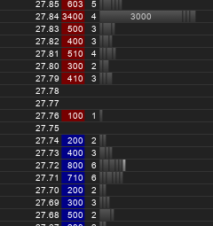

Unbolting the Compiler's Lid:
What Has My Compiler Done for Me Lately
Matt Godbolt, DRW Trading@mattgodbolt matt@godbolt.org
drw.com
Why am I here?
My background


My goals
- Un-scary-fy assembler
- Compilers are amazing
- ...but always worth checking
Backstory
int sum(const vector<int> &v) {
int result = 0;
for (size_t i = 0; i < v.size(); ++i)
result += v[i];
return result;
}
int sum(const vector<int> &v) {
int result = 0;
for (int x : v) result += x;
return result;
}Which is better?
Why care?
WARNING
- Reading assembly alone is bad
- Always measure too
x86 Assembly 101
Registers
- rax, rbx, rcx, rdx, rsp, rbp, rsi, rdi, r8-r15
- xmm0-15, ymm0-15, zmm0-15
- cs, ds, ss, es, fs, gs
- flags
Registers
| 63...56 | 55...48 | 47...40 | 39...32 | 31...24 | 23...16 | 15...8 | 7...0 |
|---|---|---|---|---|---|---|---|
| rax | |||||||
| (zeroed on write) | eax | ||||||
| ax | |||||||
| ah | |||||||
| al | |||||||
Calling convention
long func(int a, short b, char c);- Params: rdi, rsi, rdx, rcx, r8, r9; xmm0-7
- Return: rax / xmm0
- Callee-save: rbp, rbx, r12–r15
rax func(edi a, si b, dl c);(System V AMD64 ABI)
Instructions
op
op dest
op dest, src
opis e.g.add,sub,subsrc,destis a register or a memory reference
(Intel asm syntax)
Instructions
mov eax, 1234 ; eax = 1234
mov ecx, DWORD PTR g[rip] ; ecx = contents of global variable g
add eax, ecx ; eax += ecx
cmp eax, 6912 ; eax == 6912 ?
je all_ok ; then goto all_ok
call report_error ; else report error
all_ok:
ret ; and return
Instructions
mov eax, DWORD PTR [r14] ; eax = *(uint32_t *)r14
add eax, DWORD PTR [r14 + 4] ; eax += *(uint32_t *)(r14 + 4)
sub eax, DWORD PTR [r14 + 4 * rbx]
; eax -= *(uint32_t *)(r14 + 4 * rbx)
lea rax, [r14 + 4 * rbx] ; eax = r14 + 4 * rbx
int eax = *r14; // int *r14;
eax += r14[1];
eax -= r14[rbx];
int *rax = &r14[rbx];
Instructions
movsx rax, di
push rax
vpaddd ymm0, ymm0, ymmword ptr [rax]
popcnt rax
lzcnt eax, edi
bsf rax
int 3
Summary
- Registers:
rax,rbx,rcx... - Size:
rax,eax,ax... - Params:
rdi,rsi,rdx,rcx... - Result:
rax op dest, srcdest,srcare registers or memory
Where were we?
int sum(const vector<int> &v) {
int result = 0;
for (size_t i = 0; i < v.size(); ++i)
result += v[i];
return result;
}
int sum(const vector<int> &v) {
int result = 0;
for (int x : v) result += x;
return result;
}Compiler Explorer v0.1
$ g++ /tmp/test.cc -O1 -c -S -o -masm=intel -
.file "test.cc"
.text
.globl _Z3sumRKSt6vectorIiSaIiEE
.type _Z3sumRKSt6vectorIiSaIiEE, @function
_Z3sumRKSt6vectorIiSaIiEE:
.LFB786:
.cfi_startproc
mov rcx, QWORD PTR [rdi]
mov rax, QWORD PTR 8[rdi]
sub rax, rcx
...Compiler Explorer v0.1
$ g++ /tmp/test.cc -O1 -c -S -o -masm=intel - | c++filt
.file "test.cc"
.text
.globl sum(std::vector<int, std::allocator<int> > const&)
.type sum(std::vector<int, std::allocator<int> > const&), @function
sum(std::vector<int, std::allocator<int> > const&):
.LFB786:
.cfi_startproc
mov rcx, QWORD PTR [rdi]
mov rax, QWORD PTR 8[rdi]
sub rax, rcx
...Compiler Explorer v0.1
$ g++ /tmp/test.cc -O1 -c -S -o -masm=intel - | c++filt \
| grep -vE '\s+\.'
sum(std::vector<int, std::allocator<int> > const&):
.LFB786:
mov rcx, QWORD PTR [rdi]
mov rax, QWORD PTR 8[rdi]
sub rax, rcx
sar rax, 2
mov rsi, rax
test rax, rax
mov edx, 0
mov eax, 0
...Compiler Explorer v0.1
Not very pretty
To the web!
Demo
/// g71:-O2 -std=c++1z
// setup
#include <numeric>
#include <vector>
using namespace std;
int sum(const vector<int> &v) {
int result = 0;
for (size_t i = 0; i < v.size(); ++i)
result += v[i];
return result;
}
Walkthrough
; rdi = const vector<int> *
mov rdx, QWORD PTR [rdi] ; rdx = *rdi ≡ rdi->begin
mov rcx, QWORD PTR [rdi+8] ; rcx = *(rdi + 8) ≡ rdi->end
template<typename T> struct _Vector_impl {
T *_M_start;
T *_M_finish;
T *_M_end_of_storage;
};
Walkthrough
; rdi = const vector<int> *
mov rdx, QWORD PTR [rdi] ; rdx = *rdi ≡ rdi->begin
mov rcx, QWORD PTR [rdi+8] ; rcx = *(rdi + 8) ≡ rdi->end
sub rcx, rdx ; rcx -= rdx ≡ end - begin
mov rax, rcx ; rax = rcx ≡ end - begin
sar rax, 2 ; rax = rax / 4
; ≡ (end - begin) / sizeof(int)
size_t size() const noexcept {
return _M_finish - _M_start;
} Walkthrough
; rdi = const vector<int> *
mov rdx, QWORD PTR [rdi] ; rdx = *rdi ≡ rdi->begin
mov rcx, QWORD PTR [rdi+8] ; rcx = *(rdi + 8) ≡ rdi->end
sub rcx, rdx ; rcx -= rdx ≡ end - begin
mov rax, rcx ; rax = rcx ≡ end - begin
sar rax, 2 ; rax = rax / 4
; ≡ (end - begin) / sizeof(int)
test rax, rax ; is rax == 0?
je .L4 ; if so, goto L4
Walkthrough
; rdi = const vector<int> *
mov rdx, QWORD PTR [rdi] ; rdx = *rdi ≡ rdi->begin
mov rcx, QWORD PTR [rdi+8] ; rcx = *(rdi + 8) ≡ rdi->end
sub rcx, rdx ; rcx -= rdx ≡ end - begin
mov rax, rcx ; rax = rcx ≡ end - begin
sar rax, 2 ; rax = rax / 4
; ≡ (end - begin) / sizeof(int)
test rax, rax ; is rax == 0?
je .L4 ; if so, goto L4
add rcx, rdx ; rcx += rdx
; ≡ (end - begin) + begin
; ≡ end
xor eax, eax ; eax = 0
Walkthrough
; rcx ≡ end, rdx = begin, eax = 0
.L3:
add eax, DWORD PTR [rdx] ; eax += *rdx
add rdx, 4 ; rdx += sizeof(int)
cmp rdx, rcx ; is rdx == end?
jne .L3 ; if not, loop
ret ; we're done
Walkthrough
.L4:
xor eax, eax ; return 0
ret
Backstory
So, which approach is best?
Also
- Optimizer settings are important
std::accumulate
Compilers are super-smart!
Multiplication
/// g71:-O2 -std=c++1z
int mulByY(int x, int y) {
return x * y;
}
mulByY(int, int):
mov eax, edi
imul eax, esi
ret
Multiplication
1101 (13)
x 0101 (5)
--------
1101
0000
1101
+ 0000
--------
01000001 (65)
That's a lot of additions!
Haswell 32-bit multiply - 4 cycles
Multiplication
/// g71:-O2 -std=c++1z
int mulBy3(int x) { return x * 3; }
int mulBy5(int x) { return x * 5; }
int mulBy7(int x) { return x * 7; }
int mulBy9(int x) { return x * 9; }
Multiplication
/// g71:-O2 -std=c++1z
int mulBy65599(int a) {
return (a << 16) + (a << 6) - a;
// ^ ^
// a * 65536 |
// a * 64
// 65536a + 64a - 1a = 65599a
} Division
int divByY(int x, int y) {
return x / y;
}
int modByY(int x, int y) {
return x % y;
}
divByY(int, int):
mov eax, edi
cdq
idiv esi
ret
modByY(int, int):
mov eax, edi
cdq
idiv esi
mov eax, edx
ret
Haswell 32-bit divide - 22-29 cycles!
Division
/// g71:-O2 -std=c++1z
int divBy3(int x) { return x / 3; }
Division
divBy3(int):
mov eax, edi ; eax = x
mov edx, 1431655766
sar edi, 31 ; edi = x>>31
; ≡ x < 0 ? -1 : 0
imul edx ; eax:edx = x * 1431655766
mov eax, edx ; (x * 1431655766) >> 32
; 1431655766 / 4294967296 = 0.3333333335
sub eax, edi ; ... - (x < 0 ? -1 : 0)
ret
Modulus
int modBy3(int x) {
return x % 3;
}
modBy3(int):
mov eax, edi
mov edx, 1431655766
imul edx
mov eax, edi
sar eax, 31
sub edx, eax
lea eax, [rdx+rdx*2]
sub edi, eax
mov eax, edi
ret
Ternary operator
int func(int i) {
return (i < 0) ? 1234 : 5678;
}
func(int):
mov eax, edi
sar eax, 31
and eax, -4444
add eax, 5678
ret
Counting bits
/// g71:-O2 -std=c++1z -march=haswell
int countSetBits(int a) {
int count = 0;
while (a) {
count++;
a &= (a-1);
}
return count;
}
Summary
Compilers are pretty smart at cute arithmetic tricks.Compilers are super-smart!
...but aren't clairvoyant
Functions
/// g71:-O2 -std=c++1z
// setup
#include <vector>
using namespace std;
int someFunc(int);
int sum(const vector<int> &v) {
int result = 0;
for (size_t i = 0; i < v.size(); ++i)
result += someFunc(v[i]);
return result;
}Virtual methods
/// g71:-O2 -std=c++1z
// setup
#include <vector>
using namespace std;
struct Coster { virtual int costFor(int x) = 0; };
int totalCost(Coster &coster,
const vector<int> &v) {
int result = 0;
for (auto i : v)
result += coster.costFor(i);
return result;
}
Virtual methods
/// g71:-O2 -std=c++1z
// setup
#include <vector>
using namespace std;
struct Coster { virtual int costFor(int x) = 0; };
struct StaticCost : Coster {
virtual int costFor(int x) { return 1; }
};
int totalCost(Coster &coster,
const vector<int> &v) {
int result = 0;
for (auto i : v)
result += coster.costFor(i);
return result;
}
Virtual methods
/// g71:-O2 -std=c++1z
// setup
#include <vector>
using namespace std;
struct Coster { virtual int costFor(int x) = 0; };
struct StaticCost : Coster {
virtual int costFor(int x) { return x; }
};
/// TODO!
Aliasing
/// g71:-O2 -std=c++1z
// setup
#include <functional>
#include <cstddef>
void sum(int *first, int num,
int *out_sum) {
*out_sum = 0;
for (int i = 0; i < num; ++i)
*out_sum += first[i];
}
Likelihood analysis
/// g71:-O2 -std=c++1z
// setup
extern void allZero();
extern void notAllZero();
void testZeroFirst(int a, int b, int c) {
if (a == 0 && b == 0 && c == 0) allZero();
else notAllZero();
}
void testNotZeroFirst(int a, int b, int c) {
if (!(a == 0 && b == 0 && c == 0)) notAllZero();
else allZero();
}
Helping the compiler out
/// g71:-O3 -std=c++1z -march=haswell
// setup
#include <cstddef>
int sum(const int *input, size_t length) {
input = static_cast<decltype(input)>(
__builtin_assume_aligned(input, 64));
if (length & 63) __builtin_unreachable();
if (length == 0) __builtin_unreachable();
int sum = 0;
for (int i = 0; i < length; ++i) {
sum += input[i];
}
return sum;
}
Helping the compiler out?
/// g71:-O2 -std=c++1z
// setup
#include <vector>
using namespace std;
struct ImageHolder {
const vector<int> &intensities() const;
};
double average(const ImageHolder &ih) {
auto data = ih.intensities();
if (data.empty()) return 0;
long sum = 0;
for (auto &&v : data) sum += v;
return sum / static_cast<double>(data.size());
}
Undefined behaviour
Can be your friend
Infinite loops
/// g71:-O2 -DNDEBUG -std=c++1z
// setup
#include <cassert>
struct Foo {
Foo *next{nullptr};
bool isOk() const;
};
static void debugCheck(Foo *first) {
for (auto p = first; p; p = p->next) {
assert(p->isOk());
}
}
bool test(Foo *f) {
debugCheck(f);
return f != nullptr;
}
Heap elision
/// g71:-O2 -std=c++1z
// setup
#include <memory>
using namespace std;
int func() {
auto a = make_unique<int>(42);
auto b = make_unique<int>(24);
return *a + *b;
}
Using Compiler Explorer
Optimizer too clever
/// g71:-O2 -std=c++1z
constexpr int sumTo(int x) {
int sum = 0;
for (int i = 0; i <= x; ++i)
sum += i;
return sum;
}
int main(int argc, const char *argv[]) {
return sumTo(20);
}
Sum(x)
(x * (x + 1)) / 2
((x - 1) * x) / 2 + x
Classes
/// g71:-O2 -std=c++1z
class Holder {
int value_{};
public:
int value() const {
return value_;
}
};
; no output
Templates
/// g71:-O2 -std=c++1z
template<typename T>
class Holder {
T value_{};
public:
T value() const {
return value_;
}
};
Power features
- Difference view
- Conformance view TODO
- AST view TODO
- Optimization view TODO
Case Study: hash maps
An order book
Updating the order book
- New order
- Modify order
- Remove order
150 million per day
2 million in first 30 seconds
...for just one exchange
Finding an order
/// g71:-O2 -std=c++1z
// setup
#include <unordered_map>
#include <cstdint>
using namespace std;
struct Order;
using OrderId = uint64_t;
Order *findOrder(
const unordered_map<OrderId, Order *> &m,
OrderId key) {
if (auto it = m.find(key); it != m.end())
return it->second;
return nullptr;
}
Case Study: order formatting
An order
8=FIX.4.2␁9=224␁35=D␁34=698␁49=ABCDEFG␁52=20150910-18:38:30␁
56=CME␁57=G␁60=20150910-18:38:30␁167=FUT␁21=1␁204=0␁9702=2␁40=2␁
59=0␁11=RS␁54=1␁38=4␁44=-65␁55=CL␁107=CLF6-CLG6␁1028=N␁50=DRWTRDR␁
142=US,IL␁1=2375404␁10=027␁
Simplified Order
NEW stock price quantity
/// g71:-O2 -std=c++1z
// setup
#include <string>
#include <sstream>
using namespace std;
string newOrder(string stock, int price, int quantity) {
stringstream s;
s << "NEW " << stock << " " << price << " " << quantity;
return s.str();
}How Fast Is It?
- Time 100 million orders, get average time
- 550ns per order (on 3.5GHz Haswell)
- We can do better!
Profile
$ perf record ./app
$ perf report26.46% __dynamic_cast 6.00% ostream::_M_insert 5.12% __strcmp_sse2_unaligned 4.10% _int_free 3.99% basic_streambuf::xsputn 3.96% __int_to_char 3.72% newOrder 3.68% basic_ostream& __ostream_insert 3.67% num_put::_M_insert_int 2.36% malloc
Dynamic cast?
__dynamic_cast() bool std::has_facet(std::locale const&) std::basic_ios::_M_cache_locale(std::locale const&) std::basic_ios::init(...) std::basic_istream::basic_istream(...) std::basic_iostream::basic_iostream(...) std::basic_stringstream::basic_stringstream(...) newOrder
Dynamic cast?
template<typename _Facet> bool
has_facet(const locale& __loc) {
const size_t __i = _Facet::id._M_id();
const locale::facet** __facets = __loc._M_impl->_M_facets;
return (__i < __loc._M_impl->_M_facets_size
&& dynamic_cast<const _Facet*>(__facets[__i]));
}
Take Two
/// g71:-O2
// setup
#include <cstdio>
void newOrder(char *buf, const char *stock,
int price, int quantity) {
sprintf(buf, "NEW %s %d %d", stock, price, quantity);
}Take Two - Results
- 130ns per order
- 4x faster!
- We can still do better!
47.38% vfprintf 21.51% _IO_default_xsputn 9.81% __strchrnul 6.80% _itoa_word
Take Three - Rethink
- Don't need full generality of printf
- Create a custom formatter
- Maybe end up with a faster
_itoa_word
itoa
- Rightmost digit is
value % 10 - Next digit is
(value / 10) % 10 - And so on...
- Digits come out in reverse order
Take Three
class Format {
char _buffer[2048];
int _ptr;
public:
Format() : _ptr(0) {}
void append(char c) { _buffer[_ptr++] = c; }
void append(const char *data) {
while (*data) append(*data++);
}
void finish() { append('\x00'); }
void decimalAppend(int value);
void decimalAppendNonNeg(unsigned value);
};Take Three
void Format::decimalAppend(int value) {
if (value < 0) {
append('-');
value = -value;
}
decimalAppendNonNeg(value);
}Take Three
/// g71:-O3 -std=c++1z -march=haswell
// setup
#include <utility>
using namespace std;
class Format {
char _buffer[2048];
int _ptr;
public:
Format() : _ptr(0) {}
void append(char c) { _buffer[_ptr++] = c; }
void decimalAppendNonNeg(unsigned value);
void decimalAppend(int value) {
if (value < 0) {
append('-');
value = -value;
}
decimalAppendNonNeg(value);
}
};
void Format::decimalAppendNonNeg(unsigned value) {
int startPos = _ptr;
do {
append((char)(value % 10) + '0');
value /= 10;
} while (value);
// Reverse the digits.
auto end = &_buffer[_ptr - 1];
auto start = &_buffer[startPos];
while (end > start) swap(*start++, *end--);
}
Take Three
void newOrder(Format &format, const char *stock,
int price, int quantity) {
format.append("NEW ");
format.append(stock);
format.append(' ');
format.decimalAppend(price);
format.append(' ');
format.decimalAppendNonNeg(quantity);
format.finish();
}Take Three - Results
- 20ns / order
- ~100 CPU clock cycles
- 27x faster than Take One
- 6.5x faster than Take Two
Take Three - Profile
94.93% newOrder(Format&, char const*, int, int) 4.86% main
Take Three
- Can we do better?
- Yes!
Best so far
- Work out num digits
- Generate bespoke routine for N digits
- Do two digits at a time
table[x % 100]; - 13ns / order
log10(x)
Number of digits in result, N is1 + log10(x):
log2(x)with31 - clzlog10(x) = log2(x) * (ln(2)/ln(10))log(2) / log(10) ~ 0.30103 ~ 1233/4096
constexpr unsigned PowersOf10[] = {
1, 10, 100, 1000, 10000, 100000,
1000000, 10000000, 100000000,
1000000000 }; // etc
unsigned numDigits(unsigned v) {
auto log2 = 31 - __builtin_clz(v);
auto log10Approx = (log2 + 1) * 1233 >> 12;
auto log10 = log10Approx - (v < PowersOf10[log10Approx]);
return log10 + 1;
}
uses
CE the REPL
How other people use it, including things like
- Compiler teams (e.g. at Google)
- Twitter competition to "generate most code from 140c of code"
- Template metaprogramming REPL using constepr
- Minimal bug reports for compilers / search for regressions
Case Study: other people's usage
- Trying out new features
- "most output from a tweet" competition
- creating minimal bug reports for compilers
- TMP repl using static_assert
- ease of use means people try things out they would never have thought of
- Compiler optimization team at Google
- "Works on my machine" / Godbolt
How it works
How it works - Backend
- Written in
node.js - Runs on Amazon EC2
node.js
function compile(req, res, next) {
// exec req.compiler, feed it req.body
// parse output, return via res
}
var webServer = express();
var apiHandler = express.Router();
apiHandler.param('compiler',
function (req, res, next, compiler) {
req.compiler = compiler;
next();
});
apiHandler.post('/compiler/:compiler/compile', compile);
webServer.use('/api', apiHandler);
webServer.listen(10240);
Amazon EC2
- Load balancer
- Virtual machines
- Shared compiler storage
The compilers
- Built through docker images
- Compilers stored on S3
- OSS ones publically available
- MS compilers via WINE
How it works - security
- Compilers: huge attack vector
- Principal of "what's the worst could happen"
- Docker
LD_PRELOAD
How it works - Frontend
- Monaco
- GoldenLayout
Thank you!
The code
Running it locally
Conclusions
- Thanks to contributors
- Thanks to Patreon folks
- Thanks to awesome C++ community
- Thanks to you!
Go read some assembly!
{ gcc , cppx , d , swift , haskell , go , ispc }.godbolt.org
Non-virtual thunks
/// clang400:-O1 -std=c++1z
struct Foo { virtual void foo() = 0; };
struct Bar { virtual void bar() = 0; };
extern void logFoo(const Foo &);
struct FooBar : Foo, Bar {
void bar() override;
void log();
};
void FooBar::bar() {
log();
} Variant
/// clang_trunk:-O3 -march=haswell -std=c++1z -stdlib=libc++
// setup
#include <variant>
using namespace std;
using IntOrFloat = variant<int, float>;
int test(IntOrFloat iof) {
return visit([](auto i) -> int{ return i; }, iof);
}
// TODO:
int test2() {
IntOrFloat iof { 1.f };
return visit([](auto i) -> int{ return i; }, iof);
}
using T = int;
struct p1d { T x; };
struct p2d { T x; T y; };
struct p3d { T x; T y; T z; };
struct p4d { T x; T y; T z; T a; };
struct p5d { T x; T y; T z; T a; T b; };
T sum(p1d p) {
return p.x;
}
T sum(const p2d p) {
return p.x + p.y;
}
T sum(p3d p) {
return p.x + p.y + p.z;
}
T sum(p4d p) {
return p.x + p.y + p.z + p.a;
}
T sum(p5d p) {
return p.x + p.y + p.z + p.a + p.b;
}
extern T e_sum(p3d p);
extern T e_sum(p4d p);
extern T e_sum(const p5d &p);
T f3() {
p3d p {1, 2, 3};
return e_sum(p);
}
T f4() {
p4d p {1, 2, 3, 4};
return e_sum(p);
}
T f5() {
p5d p {1, 2, 3, 4, 5};
return e_sum(p);
}
The address sanitizer
/// g71:-O2
// setup
#include <cstdlib>
int read(int *array, size_t index) {
return array[index];
}